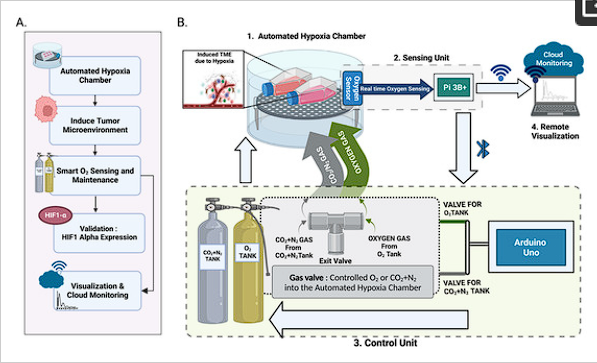
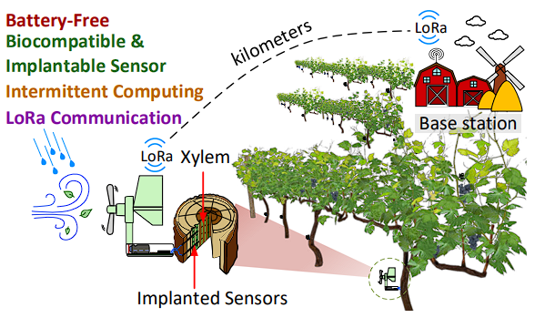

News
- Nov 2023 : Release academic website using pure Boostrap/Rubby/Jekyll
- Sep 2023 : Awarded by IROS 2023 for Travel Grant
- Jun 2023 : A paper about robot self-calibration is accepted at IROS 2023, Detroit, Michigan, USA
- Jun 2023 : A paper about object deformation recognition is accepted at International Symposium on Robotics (ISR 2023), Stuttgart, Germany.
- Mar 2023 : Paper PerFc An Efficient 2D and 3D Perception Software-Hardware Framework for Mobile Cobot is accpeted to International Florida Artificial Intelligence Research Society Conference (FLAIRS 2023)
Publications

Development of a Smart Portable Hypoxic Chamber with Accurate Sensing, Control and Visualization of In Vitro Cell Culture for Replication of Cancer Microenvironment
Authors: Harish Ramachandramoorthy (¥), Tuan Dang (¥), Ankitha Srinivasa, Kytai T. Nguyen and Phuc Nguyen
The Development of Effective Therapy Targeting the Microenvironment of Cancer

Services
Review conferences
- IEEE International Conference on Robotics and Automation (ICRA 2024)
- The 2023 IEEE/RSJ International Conference on Intelligent Robots and Systems (IROS 2023)
- Winter Conference on Applications of Computer Vision (WCACV 2024)
- The 2023 International Symposium on Electrical and Electronics Engineering (ISEE 2023, 6 papers)
- Asian Conference on Intelligent Information and Database Systems (14th, 15th)